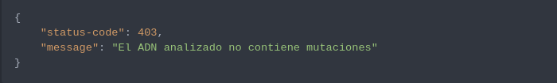

1. If the DNA provided is correct, you must receive the status code 200 and this information:
Description of the proyect
In this project, you will be able to detect if a person has genetic differences based on their DNA sequence. To achieve this, each nitrogenous base provided in the DNA is analyzed in order to detect if there is more than one sequence of 4 identical letters (which can only be A, C, G, T). Each array of nitrogenated bases represents each row from a table of NxN, so the DNA must be analyzed horizontally, vertically and diagonally
Methods and endpoints
POST DNA
To introduce a DNA and have it analyzed, the POST method
must be used in the /api/mutation endpoint, which
will take care of analyzing the sample and registering its
anomalies.
Responses
2.f the DNA provided is incorrect, you must receive the status code 403 and this information
| Request Body | Type | Description | Example |
|---|---|---|---|
| DNA | Array of strings | Each String of the array represents a nitrogenous base of DNA. Each base can only contain the letters A, C, G, T. | ["ATGCGA","CAGTGC","TTATGT"] |
GET STATS
Using the GET method in the
/api/stats endpoint you will be able to see the
statistics of all the analyzed DNAs that contain mutations.
Responses
1. If the database contains analized DNAs, you must receive status code 200 and the according information
| Response Body | Type | Description | Example |
|---|---|---|---|
| DNA | Array of strings | Each String of the array represents a nitrogenous base of DNA. Each base can only contain the letters A, C, G, T. | [ "ATGCGA", "CAGTGC", "TTATGT", "AGAAGG", "CCCCTA", "TCACTG" ], |
| has_mutation | Boolean | It represents the status of the DNA. If has mutation is "true", else is "false". | true |
| count_mutation | Integer | It represents the quantity of bases with no mutation found. | 3 |
| count_no_mutation | Integer | It represents quantity of bases with no mutation finded | 14 |
| ratio | Integer | It's the difference between count_mutation and count_no_utation | 0.21428571428571427 |